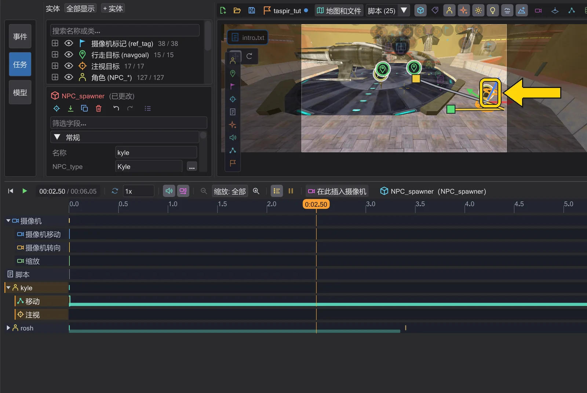

角色与路径
角色走向它们的导航点,飞船按 move 飞行——你能看到完整路径,并直接在地图上修改。

选择角色和飞船#
在视图中单击角色或飞船即可选中其实体——角色的生成器、飞船的笔刷实体。模型移动时标记和操纵器会跟随,轮廓线显示选中的对象。角色身上的箭头指示模型的朝向。
起点、终点与新路径点#
- 拖动终点控制柄可移动行走目标(
waypoint_navgoal)或飞行终点。 - 拖动起点控制柄只移动起点,而不是整条线。
- 在行走途中抓取角色(时间轴位于出发与到达之间)并拖动:会在该时刻创建新的路径点——角色为新的导航点,飞船为拆分后的
move。 - 旋转同理:在飞行途中,圆环会以新角度创建新的路径点。对于角色(NPC),会在该时刻写入
set ( SET_DYAW )——角色以其转身速率转向,与游戏一致;对于玩家仍写入立即转向的set ( SET_ANGLES )。行走中则在到达时生效,因为游戏会让行走的角色面向行进方向。如果那一刻有注视目标(watch target)在起作用,状态栏会发出提示:游戏中角色会继续面向该目标。
步行或奔跑、共享目标#
右键单击行走路径的终点控制柄(或时间轴中的条带)打开菜单:
- 行走(从此段起) / 奔跑(从此段起)——在导航点前写入
SET_WALKING或SET_RUNNING。 - 行走时注视——角色行走时持续转向另一个角色(
SET_WATCHTARGET)。 - 倒退行走(保持向后看)——在起点后方放置注视标记使其倒退行走;面向行走方向 取消。
多个角色共用一个导航点时,移动它会影响所有角色。BehavEd-Remake 会察觉这一点,先为这段行走复制一个独立目标——状态栏会告诉你新建了哪个。
BOTH_WALKBACK1 或 BOTH_RUNBACK1。角色如何移动——与游戏一致#
预览按游戏自身的规则逐帧移动 NPC:转向、移动物理和路径。你看到的就是游戏对你的脚本所做的:
- 速度。 行走使用角色出发时设定的速度——即使
SET_WALKING、SET_RUNNING、SET_WALKSPEED或SET_RUNSPEED紧跟在SET_NAVGOAL之后也是如此。途中设定新速度会改变剩余路程的速度。脚本中没有设定速度时,使用 .npc 文件中的值。 - 停下。 用
NULL调用SET_NAVGOAL会让角色在原地停下;等待该行走的dowait随即继续。行走途中设定新的导航点时,从角色当前位置出发。 - 转身。 NPC 以其转身速率转向:每秒 60 + 3 ×
SET_YAWSPEED度(常见的 yawSpeed 90 即 330 度)。SET_DYAW、SET_VIEWTARGET和SET_WATCHTARGET平滑转向,SET_ANGLES立即转向。rotate和move对 NPC 无效——游戏中也是如此。难度和游戏规则会改变某些类别的速率(首选项)。 - 重力。 角色站在地图地面上,会坠落、登上台阶、贴着斜坡并随升降机移动——遵循地图的
gravity和SET_GRAVITY。地图加载时生成的角色在过场开始时仍在下落,与游戏一致。DROPTOFLOOR在单人游戏中不起作用。 - 地图上的角色。 地图加载时生成的每个角色(没有
targetname的NPC_*实体)都会出现在预览中,即使没有脚本提到它——例如 md_am_sith 中阿纳金身旁的机器人。脚本标签页会省略其他过场的演员:带有NPC_targetname和 CINEMATIC 生成标志的角色在游戏中不会自行行动,因此只出现在其脚本使用它的标签页中(在 md_am_sith 中,片尾字幕显示阿纳金ani4,而不是其他场景的ani1到ani5)。空白标签页显示地图加载时的样子,包含所有角色。NPC_Droid_R2D2、NPC_Kyle或NPC_Stormtrooper等类别会像游戏中一样自行选择角色类型;游戏随机选择的情况(没有生成标志的NPC_Stormtrooper、Movie Duels 的随机生成器),预览显示第一个选项。 - 路径。 只有在游戏也会这样做的地方,角色才会直线走向目标:距离很近(不到 110 单位)、在相邻路径点之间(不到 500)或视线畅通(不到 400)。否则它会沿路径点网络逐点行走——请用路径点连接你的目标(NPC 路径点)。绕过拐角时,一次行走会显示为同一命令的多个片段。
- 没有路径。 如果网络中没有路径,角色会站着不动,等待该行走的
dowait永远不会结束——游戏中也是如此。状态列表会指出是哪个角色和哪个目标。 - 门。 门和其他移动笔刷位于游戏中那一刻所在的位置。NPC 会在关闭的门前等待,门打开后继续行走。上锁的门(或只有玩家能打开的门)在关闭期间会挡住去路。被脚本移动(
move、rotate)或移除的墙和门,位于脚本所放置的位置。 - 边缘、曲面和其他 NPC。 NPC 会从边缘掉落并着地;曲面(patch)会像墙一样挡住它们。它们不会互相穿过:两个 NPC 相遇时,预览会显示游戏如何让它们错开——
dowait的时间也随之变化。与游戏中一样,隐形(SET_INVISIBLE true)或非实体(SET_SOLID false)的角色不会挡住任何人,没有脚本、只站在地图中的角色会挡路,被杀死的角色在变成尸体之前仍会挡路(Movie Duels 中 5 秒,OpenJK 中 0.5 秒;Mark1 和 Interrogator 永远不会变成尸体)。站在另一个角色体内时重新设为实体(SET_SOLID true)的角色,要等到不再重叠时才会变成实体——对该set的dowait等待的时间与游戏中相同。带有tag( "name", ORIGIN )或ANGLES的SET_ORIGIN和SET_ANGLES会把角色放到同名的 ref_tag 或导航目标处;没有这样的标记时,命令与游戏中一样不起作用。会原力跳跃的 NPC(.npc 中有 FP_LEVITATION)会像游戏中一样跳跃:越过路点网的跳跃边(targetJump),以及被挡住 2 秒后跳向目标;预览会播放游戏中的动画——跳跃动画(离地时双腿切换为跳跃姿势,上半身把它播完;空翻保持全身)和落地动画,即使BS_JUMP的跳跃在BS_DEFAULT之后才落地也是如此。执行SET_NO_ACROBATICS true后 NPC 不再跳跃(它仍会走跳跃边并停在边前,与游戏中一样)。在行为状态BS_JUMP中,NPC 会像游戏中一样转向其导航目标、蹲下、以一条弧线跳过去并落地;对该导航目标的dowait在落地动画之后、到达目标时结束(落点不够远时会再跳一次)。弧线与游戏完全相同:跳向高于 NPC 的导航目标时会落得太近,跳向低于它的目标时会跳得太远;悬在空中的导航目标只是瞄准点。 - BS_NOCLIP。 使用
SET_BEHAVIOR_STATE BS_NOCLIP时,角色会以当时的速度直线穿墙飞向目标。请在BS_NOCLIP之后设定SET_WALKSPEED或SET_RUNSPEED,否则尚未走动过的角色根本不会移动(dowait也会卡住)。 - OpenJK 还是 Movie Duels。 在 OpenJK 规则下,NPC 每 100 毫秒重新转向并转身一次(高阶光剑使用者从 绝地武士 起每 50 毫秒)——因此转身所需时间约为 Movie Duels 的两倍,后者两者都每 50 毫秒一次;各难度的转身速率也不同——因此一次行走的结果可能略有差异。Jedi Outcast 任务与 OpenJK 遵循相同的 100 毫秒节奏,NPC 原地转身时也是如此。规则在 首选项 中选择。
光剑:墙壁与碰撞#
光剑的表现与游戏一致。伸进墙壁、地面或门里的剑刃会被截短到表面并重新长出;接触期间会迸出火花并发出声音,沿墙滑过的地方会烧出一道痕迹,短暂发光并在十秒后消失。在水中剑刃会沸腾。.sab 文件中设有 noIdleEffect 的光剑在角色只是站立时保持安静。只有摄像机能看到的角色才会产生火花、痕迹和声音——游戏也只处理摄像机视野内的东西。在时间轴上跳转显示的效果与完整播放相同,向后拖动播放头也和向前一样流畅:计算过一次的内容会保留在内存中(每个场景最多十分钟)。
两名角色的剑刃只在游戏允许的情况下相撞。Movie Duels: 两个 NPC 都必须处于 BS_CINEMATIC(set ( SET_BEHAVIOR_STATE, BS_CINEMATIC ),或带 CINEMATIC 生成标志的生成器),且攻击方需要 set ( SET_SABERCOLLISIONS, true );用 false 再关闭。OpenJK 没有 SET_SABERCOLLISIONS:那里只有处于 BS_CINEMATIC 的角色在播放 BOTH_CIN_16 和 BOTH_CIN_17 动画时剑刃才会相撞(Movie Duels 也允许这两个动画)。命中时会播放格挡火花、该游戏的一种碰撞音效和碰撞闪光。AI 自己会进行的战斗(SET_ENEMY、BS_DEFAULT)不会被模拟——只模拟脚本驱动的动画。在 Movie Duels 中,快速剑式点燃剑刃的速度也会快一倍。规则在 首选项 中选择。